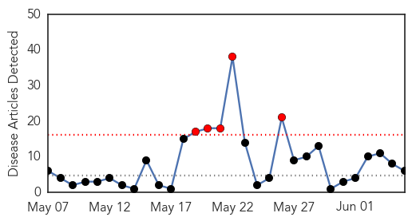
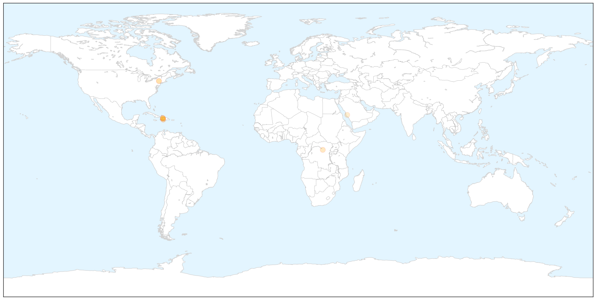
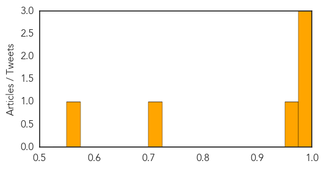
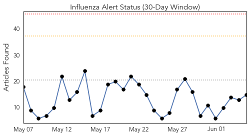
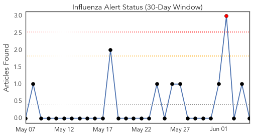
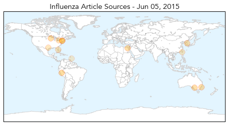
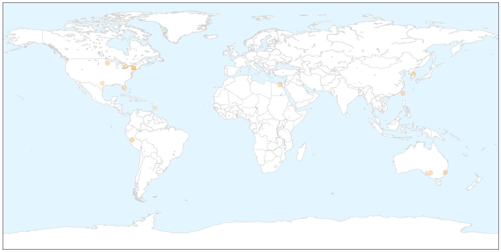
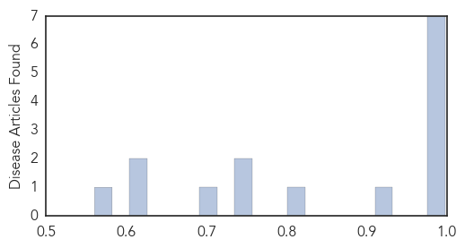

Cholera
30-Day Web Trend
5 alerts, 0 warnings

30-Day Twitter Trend
2 alerts, 0 warnings

Article Locations

X

Article Confidences
Top Articles:
- 0.997
- Haiti and United Nations Accountability: The Cholera Epidemic
- 0.992
- Cholera’s fresh attack in Haiti
- 0.990
- Cholera’s fresh attack in Haiti
- 0.956
- Lawyers file appeal against US judge ruling on cholera cases
- 0.713
- UN relief wing boosts emergency support to refugees fleeing Burundi crisis
- 0.564
- Health Ministry unveils plan for Haj 1436Healthcare
Top Tweets:
-
No tweets found for Jun 05, 2015
Influenza
30-Day Web Trend
0 alerts, 0 warnings

30-Day Twitter Trend
4 alerts, 0 warnings

Article Locations

X

Article Confidences
Top Articles:
- 0.998
- Close Glimpse At The Human Contraction of Bird Flu
- 0.996
- How Can Humans Catch The Bird Flu? « CBS Minnesota
- 0.993
- Flu cases tracking at record levels
- 0.993
- Why your next flu shot will be different
- 0.992
- Flu cases tracking at record levels
- 0.987
- Flu shot only 19% effective this winter
- 0.987
- Flu shot only 19% effective this winter
- 0.924
- Disease controllers had foresight of Korea’s weakness on new infectious diseases, news, Health News, AsiaOne YourHealth
- 0.804
- ‘Fowl’ play
- 0.751
- June 5, 2015 Archives
- 0.751
- June 4, 2015 Archives
- 0.706
- Avian Flu Scan for Jun 05, 2015
- 0.622
- VirScan Reveals Viral History in a Drop of Blood
- 0.605
- Single drop of blood can determine every virus you've ever had, scientists say — RT News
- 0.560
- Medical Officer of Health and Director of Primary Healthcare, Dr Kiran Kumar retires
Top Tweets:
-
No tweets found for Jun 05, 2015